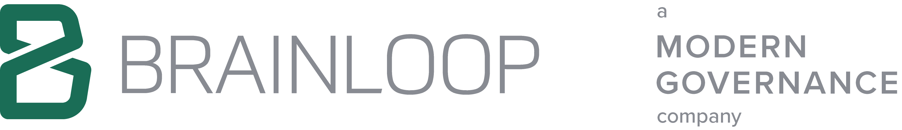
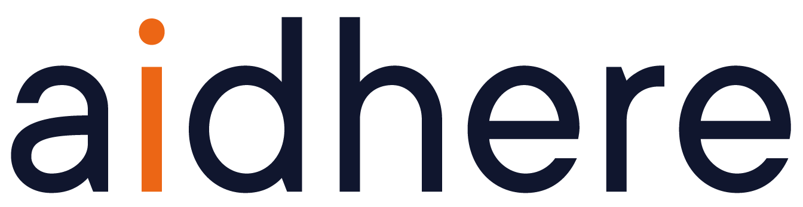
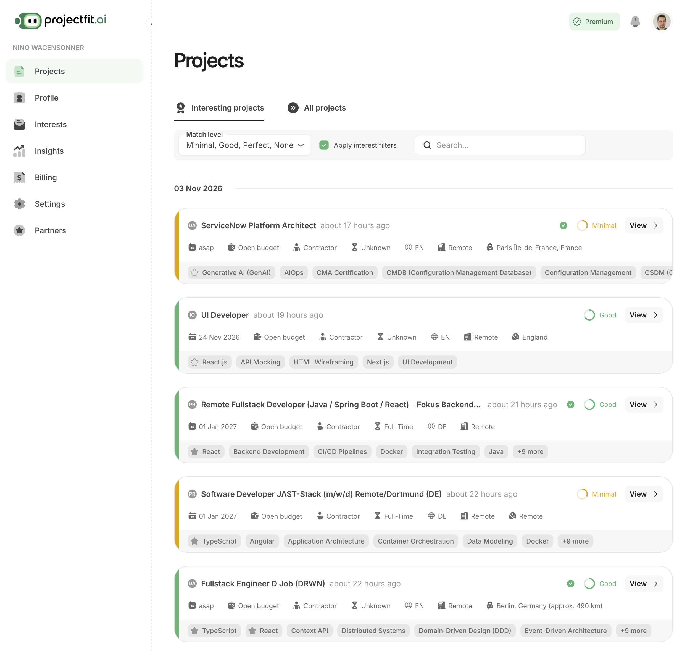

Architektur und Weiterentwicklung des zentralen GraphQL-Proxys, inklusive API-Design, Datenmodellierung und stabiler Anbindung mehrerer Backends.
Nino Wagensonner · Software, Architektur & AI
Software, Architektur
und produktreife AI.
Ich unterstütze Unternehmen und Produktteams dort, wo technische Entscheidungen langfristig teuer werden können: bei Architektur, Entwicklung und dem produktiven Einsatz von AI. Ich denke vom Geschäftsmodell bis in den Code und baue Software so, dass Ihr Team sie dauerhaft weiterentwickeln kann.
18+
Jahre Erfahrung in Softwareentwicklung und Architektur, vom Startup-Prototyp bis zum Konzern-System.
Projekterfahrung
Eine Auswahl meiner Arbeit
Projekte und Aufgaben
Entwicklung der ZEIT Shop App mit Shopware-Anbindung, automatisierten Releases für iOS und Android und flüssiger Performance auch auf einfachen Geräten.

Microservices, sichere Datenräume und die konsistente Migration hochsensibler Kundendaten unter strengen Sicherheitsanforderungen.

App- und Backend-Entwicklung für regulierte Gesundheitsanwendungen sowie technisches Mentoring des Entwicklungsteams.
Eigenes Produkt
projectfit.ai
AI-gestütztes Projektmatching für IT-Freelancer
Klassische Stichwortsuche scheitert im Recruiting, weil dieselbe Fähigkeit je nach Projekt völlig anders beschrieben wird. projectfit.ai löst dieses Problem semantisch und bringt Freelancer und Projektanforderungen präzise zusammen.
Als Mitgründer verantworte ich neben der Produkt- und Frontend-Entwicklung (TypeScript, React) das LLM- und Prompt Engineering sowie Vertrieb und Kundenfeedback. Diese Produktperspektive bringe ich direkt in meine Beratungsprojekte ein.
Projekt im Portfolio ansehen
Ansicht vergrößern ↗Erfahrung nach Aufgaben
App-EntwicklungiOS · Android · Flutter · SwiftUI9 Projekte
- DIE ZEIT: Mitentwicklung der Shop-App mit Shopware-Anbindung und automatisierter Veröffentlichung. Eine zentrale Anforderung war flüssige Bedienung auch auf günstigen Android-Geräten.
- Kontina · aidhere: Entwicklung einer wiederverwendbaren Flutter-App mit CMS-Inhalten und Offline-Synchronisation.
- Zanadio · aidhere: Mitarbeit an der medizinischen App zur Unterstützung der Adipositastherapie, einschließlich Bluetooth-Anbindung von Fitness-Hardware und Videochat.
- Bornholdt Lee: Mitarbeit an einer Flutter-App zur Unterstützung von Brustkrebspatientinnen, die für eine DiGA-Zertifizierung vorgesehen war.
- Azubi.click: Entwicklung einer App zur standortbezogenen Suche nach Ausbildungsplätzen.
- atme! · Soccerbrands: Leitung der App-Entwicklung im Auftrag von Soccerbrands, von der Konzeption bis zur Umsetzung für iOS und Android.
- Hoiz: Flutter-App für Foto-Wettbewerbe und Abstimmungen mit Wischgesten.
- Tic Tac Nine: Cross-Plattform-Multiplayer mit Spielersuche und AI-Gegnern.
- Linde Austria · über Motius: Unterstützung bei der App-Entwicklung zur Nachverfolgung von Sauerstofflieferungen im Auftrag von Motius.
Web & E-CommerceReact · Shopify · CMS · Prototyping4 Projekte
- Tanne360 · creativesuit7: Technische Evaluation, Prototyp und Umsetzung einer 360°-Produktansicht in Shopify, einschließlich Lieferzeitfenstern. Dazu gehörten auch Produktfotografie und Freistellung der Bäume.
- projectfit.ai: Produkt- und Frontend-Entwicklung mit TypeScript und React.
- Brainloop: Frontend-Entwicklung mit React für sichere Datenräume.
- Kontina · aidhere: Entwicklung eines Flutter-CMS, dessen Inhaltsvorschau dieselben Komponenten wie die App verwendet.
Für Entwurf und Prototyping nutze ich je nach Aufgabe Figma, Sketch, Adobe XD, Blender und Photoshop.
Backend-EntwicklungAPIs · Datenmodelle · Synchronisation8 Projekte
- freenet: Entwicklung und Pflege des zentralen GraphQL-Proxys: unterschiedliche Backends anbinden, Datenmodelle weiterentwickeln und die Kompatibilität bei Änderungen erhalten.
- Brainloop: Microservices, CQRS und Event Sourcing sowie die Migration hochkritischer Daten. Konsistenz und der Schutz sensibler Informationen waren zentrale Anforderungen.
- Linde Austria · über Motius: Backend für die Nachverfolgung von Sauerstofflieferungen: APIs zur Datensynchronisation, Echtzeit-Anbindung mit Firebase und Unterstützung bei der App-Entwicklung.
- Azubi.click: Backend-Services in Go, Web-Crawler und standortbezogene Suche mit Bleve.
- Kontina · aidhere: Prototyp der Backend-Architektur, Services in Go und ein eigener Mechanismus zur Offline-Synchronisation.
- Hoiz: Go-Backend mit PostgreSQL für Foto-Wettbewerbe, Abstimmungen und die Einbindung von Partnerunternehmen.
- atme! · Soccerbrands: Serverloses Firebase-Backend in TypeScript für die App.
- Tic Tac Nine: Firebase-Backend mit Matchmaking für Spieler und AI-Gegner.
Cloud, Betrieb & QualitätDeployments · Infrastruktur · Tests9 Projekte
- freenet: Integration von AWS Lambda für den zentralen GraphQL-Proxy, mit Fokus auf Performance und Zuverlässigkeit.
- projectfit.ai: Entwicklung mit AWS und LocalStack für lokale Cloud-Umgebungen.
- Azubi.click: Google Cloud und Docker für die Backend-Services.
- Kontina · aidhere: Kubernetes und Telekom Cloud im Kontina-Projekt sowie Integrations- und Unit-Tests für App und Backend.
- DIE ZEIT: Automatisierte Veröffentlichung der Shop-App für iOS und Android.
- atme! · Soccerbrands: CI/CD, Jest-Tests und Code-Reviews für die App und das serverlose Backend.
- Hoiz: Umgang mit Lastspitzen bei Foto-Wettbewerben.
- Linde Austria · über Motius: Backend-Entwicklung mit Google Cloud Functions und Echtzeit-Synchronisation über Firebase im Auftrag von Motius.
- Tic Tac Nine: Firebase und Google Cloud als Grundlage des Multiplayer-Backends.
Datenbanken, Messaging und RPC gehören ebenfalls dazu: unter anderem PostgreSQL, MySQL, MongoDB, Cassandra, Neo4j, RabbitMQ und gRPC.
Sicherheit & MedizintechnikSensible Daten · Geräte · Anforderungen4 Projekte
- Brainloop: Sichere Datenräume, Vault für Zugangsdaten im Cluster und Migration vertraulicher Daten in einer Microservices-Umgebung.
- Zanadio · aidhere: Entwicklung unter Anforderungen an medizinische Software, Anbindung von Fitness-Hardware über Bluetooth und Integration von Videochat.
- Bornholdt Lee: Mitarbeit an einer für die DiGA-Zertifizierung vorgesehenen App und Abstimmung der Backend-APIs.
- Linde Austria · über Motius: APIs zur Datensynchronisation unter Datenschutzanforderungen für die Nachverfolgung von Sauerstofflieferungen.
Beratung & TeamsArchitektur · Roadmap · Zusammenarbeit5 Projekte
- freenet: Architektur- und Schemadesign, Systemanalyse, teamübergreifende Fehlersuche und Abstimmung mit Stakeholdern.
- Grüner Werkzeugkasten: Technische Due Diligence, Modernisierung und strategische Roadmap für eine Plattform der Film- und Medienproduktion. Dazu kamen Qualitätssicherung, Skalierbarkeit und Unterstützung beim Recruiting.
- Kontina · aidhere: Mentoring des bestehenden Entwicklungsteams.
- atme! · Soccerbrands: Konzeption, Entwicklungsleitung, Coaching und Einführung von Code-Reviews.
- projectfit.ai: Als Mitgründer verbinde ich Produktentwicklung mit Vertrieb und Geschäftsentwicklung.
AI, Suche & DatenLLMs · Modelle · Training · Embeddings3 Projekte
- projectfit.ai: LLM- und Prompt Engineering, Matching von Fähigkeiten und Projekten sowie Integration in TypeScript und React. Dazu kommen maschinelle Lernverfahren und die kontinuierliche Produktentwicklung.
- Azubi.click: Web-Crawler und standortbezogene Suche mit Bleve für Ausbildungsplätze.
- Tic Tac Nine: Matchmaking und Spiel-AI für eine Multiplayer-App.
Mein Angebot umfasst außerdem AI-Workflows, Modellauswahl und Evaluation, Training und Embeddings, verbunden mit Benutzeroberflächen, Schnittstellen, Tests und produktivem Betrieb. Weitere Werkzeuge aus meiner Praxis sind Ollama, HDBSCAN, TensorFlow und NumPy.
Leistungen
Wobei ich Sie
unterstütze.
Architektur & technische Entscheidungen
Steht eine Modernisierung an, wächst ein System nicht mehr mit oder braucht Ihr Team eine zweite Meinung? Ich analysiere Bestandssysteme, bewerte Optionen realistisch und entwickle mit Ihnen eine belastbare Roadmap.
Entwicklung von Apps, Web & Backends
Ich berate nicht nur auf Folien, sondern setze mit um: von der API-Architektur über moderne Web- und Mobile-Apps bis zum stabilen Betrieb in der Cloud.
Produktreife AI-Anwendungen
Zwischen einem eindrucksvollen AI-Prototyp und verlässlicher Software liegt ein großer Schritt. Ich entwickle LLM-Anwendungen, die kontrollierbar, messbar und robust genug für den Produktivbetrieb sind.
Sparring & Verstärkung für Ihr Team
Ich steige direkt in laufende Projekte ein, löse technische Engpässe und gebe mein Wissen über Architektur, Code-Reviews und gemeinsame Arbeit an Ihr Team weiter.
Arbeitsweise
Ohne Umwege zur
professionellen Lösung.
Als technischer Generalist sehe ich das Gesamtbild von der Benutzeroberfläche über Backend und Infrastruktur bis zu AI-Modellen und gehe genau dort in die Tiefe, wo es für Ihr Projekt zählt.
AI in der Zusammenarbeit
Ich nutze moderne AI-Werkzeuge im gesamten Entwicklungsprozess für Analyse, Prototyping und Code. Das beschleunigt die Umsetzung, während Architektur- und Qualitätsentscheidungen fest in erfahrener Hand bleiben.
-
Beim echten Problem anfangen.
Bevor wir über Technologien sprechen, schauen wir auf den Alltag Ihrer Nutzer: Wo geht Zeit verloren, woran scheitern Abläufe heute? Daraus ergibt sich, was die Software wirklich leisten muss.
-
Technik an der Aufgabe messen.
Nicht jede neue Technologie löst ein echtes Problem. Ich wähle Lösungen danach aus, was sich sinnvoll weiterverwenden lässt und was Ihr Team später ohne externe Abhängigkeit betreiben kann.
-
Früh testen, gezielt nachschärfen.
Statt monatelang im Stillen zu spezifizieren, bringen wir früh eine nutzbare Version in echte Hände. Rückmeldungen aus dem Einsatz entscheiden über die nächsten Schritte.
Eigene Produkte & Forschung
Isar
Innovations.
Mit meiner GmbH Isar Innovations entwickle ich eigene Softwareprodukte. Wer selbst Produkte baut und betreibt, trifft auch in der Beratung realistischere Entscheidungen.
Zur GmbHForschung
Neben Kundenprojekten forschen wir an konkreten Fragen aus der AI-Praxis: Wie finden AI-Agenten wirklich neue Lösungswege, und wie lassen sich riesige, uneinheitliche Skill-Datenbanken zuverlässig strukturieren?
Alle ForschungsarbeitenKontakt
Woran arbeiten
Sie gerade?
Schildern Sie mir kurz Ihr Vorhaben oder die technische Frage, die Sie gerade beschäftigt. In einem unverbindlichen Erstgespräch (ca. 30 Minuten) klären wir, ob und wie ich Sie sinnvoll unterstützen kann.
n.wagensonner@manyminds.deUnterschleißheim bei München · Remote & vor Ort